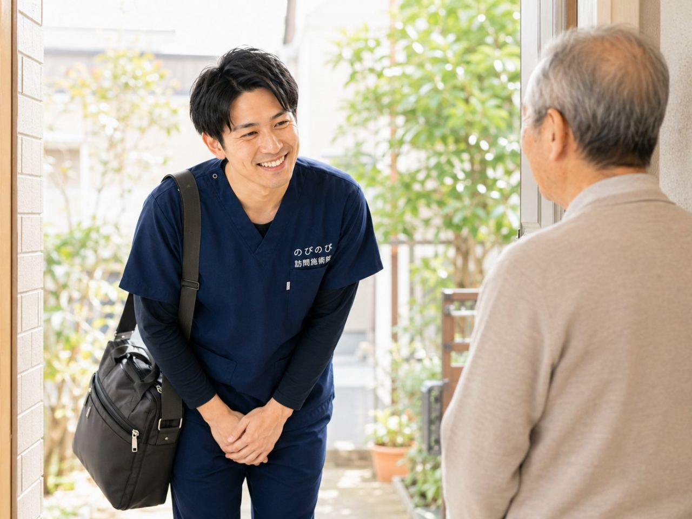

入院を終えて、ようやく家に戻れた。ほっとする一方で、「体力が落ちて思うように動けない」「家での暮らしがうまく回るか不安」という声をよくいただきます。退院直後の在宅移行期は、体も暮らしも大きく変わる時期です。通院そのものが体の負担になりやすく、暮らし慣れた家で受けられる訪問鍼灸マッサージが、落ちた体力の回復やこわばりの緩和を、無理のないペースで支える選択肢になります。ここでは、退院したばかりの高齢のご家族を在宅で支えたい方に向けて、在宅移行期に訪問がどう役立つかをお伝えします。
要点から。退院後に動かない時間が続くと、体力や関節の動きは落ちやすくなります。だからこそ在宅移行期には、鍼灸マッサージと機能訓練を組み合わせ、動く力の回復を支えます。医師の同意にもとづく医療保険で受けられ、費用は1回3,950円、自己負担は1割の方で約395円が目安です。出張費は料金に含まれ別途かかりません。介護保険の限度額とは別枠で、要介護認定は不要ですが医師の同意書が必要です。機能訓練は鍼灸に加えて行うもので、追加料金はかかりません。医療機関の治療・リハビリが主で、鍼灸マッサージは補助です。効果の感じ方には個人差があります。
退院直後の在宅移行期に、体はどう変わるか
入院中はどうしても体を動かす機会がへり、筋力や体力が落ちてしまいがちです。安静に過ごした日数が長いほど、その影響は大きくなる傾向があります。退院して家に戻ると、入院前は当たり前にできていたことが、思うようにいかなくなっていることに気づくご家族も少なくありません。
ベッドから立ち上がる、トイレまで歩く、玄関の上がりかまちをまたぐ、階段を上る。そうした何気ない動作がつらくなったり、体のこわばりや痛みが出たりすることがあります。食欲が戻らず日中もうとうと過ごしてしまう、という声もよくうかがいます。この在宅移行期をどう過ごすかが、その後の回復に関わってくると考えられています。
動かない時間が続くと、体力・関節はこう落ちやすい
体は動かさない時間が続くと、筋肉がやせて力が入りにくくなり、関節も動く範囲がせまくなりやすいといわれます。退院直後は「痛いから動かさない」「転ぶのがこわいから安静にする」という気持ちが働きやすく、それがさらに動きにくさを招く、という流れに入りやすい時期でもあります。
とはいえ、急に頑張って動かせばよいわけでもありません。無理な負荷はかえって体を痛めるおそれがあります。大切なのは、その日の体調を見ながら、少しずつ動く量を整えていくことです。在宅移行期は、この「少しずつ」の見きわめがとくに大事になります。
こんな変化があれば、まず主治医へ（受診の目安）
退院後は、体の状態がまだ落ち着いていないこともあります。退院前に説明された症状のほかに、傷のあたりが赤く腫れてきた、熱が続く、痛みや腫れが急に強くなった、息苦しさやめまいが出たといった気になる変化があるときは、まず退院した病院や主治医にご相談ください。
鍼灸マッサージは、こうした状態が落ち着いたうえで、体力の回復やこわばりの緩和を、できる範囲で支えるものです。急な変化のサインを見逃さないことが、在宅移行期を安全に進める土台になります。判断に迷うときも、遠慮なく医療機関に確認していただくと安心です。
訪問での鍼灸マッサージと機能訓練は、どう働くか
はりやお灸には、こわばった筋肉を和らげ、血のめぐりを促し、痛みを軽くする働きが期待されます。のびのび訪問施術院では、これに、落ちた筋力を少しずつ取り戻す機能訓練や、関節を動かす手技を、組み合わせています。機能訓練は鍼灸に加えて行うケアで、別料金にはなりません。
たとえば、座ったままの足の運動や立ち座りの練習など、退院直後の体に無理のない動きから始めます。急に負荷をかけると体の負担になりますので、その日の体調や痛みの様子をうかがいながら、少しずつ量を調整します。あくまでその方のペースに合わせて、動く力を取り戻せるよう支えます。役割の違いについては訪問鍼灸と訪問リハビリの違いをご覧ください。
医療機関の治療・リハビリが主、鍼灸マッサージは補助
はじめにお伝えしておきたいのは、退院後の回復の中心は、あくまで主治医による治療や、病院・訪問リハビリで行うリハビリだということです。鍼灸マッサージは、それに取って代わるものではありません。まわりの筋肉を和らげ、動かしやすさやこわばりの面から回復を支える、補助的なケアという位置づけです。併用できるかどうかは訪問鍼灸と訪問リハビリの違いに書いています。
そのため、退院時に受けた指示や動かしてよい範囲を確かめながら進めることを大切にしています。医療の方針と歩調を合わせてこそ、在宅移行期のケアは安全に役立ちます。脳梗塞などの後の在宅ケアについては脳梗塞後の在宅ケアもあわせてご参考ください。
通院がつらい在宅移行期こそ、家に来てもらう
退院直後は体力が落ちていて、通院そのものが大きな負担になりやすい時期です。せっかく家に戻れたのに、また通院で疲れてしまっては、回復の妨げになりかねません。
訪問なら、その移動がまるごと要りません。住み慣れた家で、いつもの場所のまま施術を受けられるので、道中で体力を消耗せずに回復に専念できます。家に戻った直後の心細い時期を、そばで支えられるのも訪問ならではです。再入院を防ぐという観点は再入院を防ぐ在宅ケアでも触れています。
費用の目安と、介護保険との関係
費用は、医師の同意にもとづく医療保険（療養費）で受けられます。1回の総額は3,950円、自己負担は1割の方で約395円が目安です。エリア内は出張費・交通費が料金に含まれ、別途かかりません。たとえば週1回うかがう場合、1か月の自己負担はおよそ1,580円（1割の方）が目安になります。
また、医療保険で受けるため、介護保険の区分支給限度額とは別枠です。デイサービスやヘルパーなどで限度額を使っていても、そこを圧迫しません。要介護認定は不要で、必要なのは医師の同意書です。料金の詳しい内訳は料金をご確認ください。
在宅を支えるチームの中で、情報を共有する
退院後の在宅生活は、主治医や訪問看護、訪問リハビリ、ケアマネジャー、そしてご家族と、多くの人が関わって支えます。鍼灸マッサージも、その中の一つとして、体力の回復やこわばりの緩和という面から役割を担います。
退院のときには、入院中の経過やこれからの注意点について、病院から説明や書類が渡されることが多いものです。こうした情報を在宅を支えるみんなで共有し、同じ方向を向いて進めることで、より安心してケアを重ねられます。退院時にどんな指示を受けているか、訪問の際にもお聞かせいただけると助かります。
退院後の家での過ごし方で、回復を後押しする
施術のほかに、日々の過ごし方も回復を後押しします。退院時に受けた指示を守る、無理のない程度に体を動かす、栄養と水分をしっかりとる、休むときはしっかり休む、転ばないように家の中を整える。とくに退院直後は足元が弱っていますので、動線に手すりがあると安心です。
日中に少し体を起こして過ごす時間をつくると、昼夜のリズムも整いやすくなります。焦らず、少しずつ生活の調子を取り戻していくことが大切です。気になることがあれば、主治医や訪問看護に遠慮なくご相談ください。どのサービスがどの保険かは在宅サービスの違い早見表で一覧にしました。
焦らず、その方のペースで整える
退院直後は、早く元どおりになりたいと焦る気持ちが出やすい時期です。ですが、無理をして体を痛めては、かえって回復が遠のいてしまうこともあります。大切なのは、その方のペースで、一歩ずつ進むことだと考えています。
定期的に体を見てもらい、こわばりを和らげ、動く力を少しずつ取り戻していく。そうした積み重ねが、家での暮らしを取り戻す支えになります。感じ方には個人差がありますので、まずは無理のない範囲から始めてみてください。
よくある質問
退院してすぐでも来てもらえますか？
状態が落ち着いていれば、退院後まもなくからうかがえます。ただし鍼灸マッサージは医師の同意にもとづく保険のケアですので、まずは退院した病院や主治医に相談し、動かしてよい範囲を確かめたうえで始めると安心です。傷の腫れや発熱、急な痛みなど気になる変化があるときは、先に医療機関へご相談ください。
訪問リハビリや訪問看護を受けていても、あわせて頼めますか？
はい。鍼灸マッサージは在宅を支える専門職の一つとして、体力の回復やこわばりの緩和という面から補助的に役割を担います。主治医やケアマネジャー、訪問看護と退院時の情報を共有しながら、同じ方向を向いて進めますので、併用のご相談もお気軽にどうぞ。
費用はいくらですか？出張費はかかりますか？
医療保険で受ける場合、1回の総額は3,950円、自己負担は1割の方で約395円が目安です。エリア内は出張費・交通費が料金に含まれ、別途かかりません。週1回うかがう場合、1か月の自己負担はおよそ1,580円（1割の方）が目安です。
要介護認定がなくても受けられますか？
はい。訪問鍼灸マッサージは医療保険で受けるため、要介護認定は必要ありません。必要なのは医師の同意書です。慢性的な痛みやしびれ、麻痺にともなうこわばりなどについて医師が必要と認め、通院がむずかしい場合に対象となることがあります。
介護保険の限度額を使い切っていても受けられますか？
受けられる場合があります。訪問鍼灸マッサージは医療保険で受けるため、介護保険の区分支給限度額とは別枠です。デイサービスやヘルパーなどで限度額を使っていても、その枠を圧迫しません。詳しくはお気軽にお問い合わせください。
保険で受けるには何が必要ですか？
医師の同意書が必要です。退院後の慢性的な痛みやしびれ、麻痺にともなうこわばりなどについて、医師が必要と認めることが前提になります。同意書の取得についても、ご相談いただければ流れをご案内します。まずは主治医の方針を確認しながら進めていきます。
どのくらいのペースで来てもらえますか？
体調や回復の様子に合わせてご相談のうえ決めます。退院直後は週1回から始める方が多いですが、無理をしない形で調整します。その日の体調や痛みを見ながら少しずつ量を整えていきますので、はじめから頑張りすぎる必要はありません。
機能訓練は別料金になりますか？
いいえ。機能訓練や関節を動かす手技は鍼灸に加えて行うケアで、追加料金はかかりません。座ったままの足の運動や立ち座りの練習など、退院直後の体に無理のない動きから始め、動く力の回復をゆるやかに支えます。効果の感じ方には個人差があります。